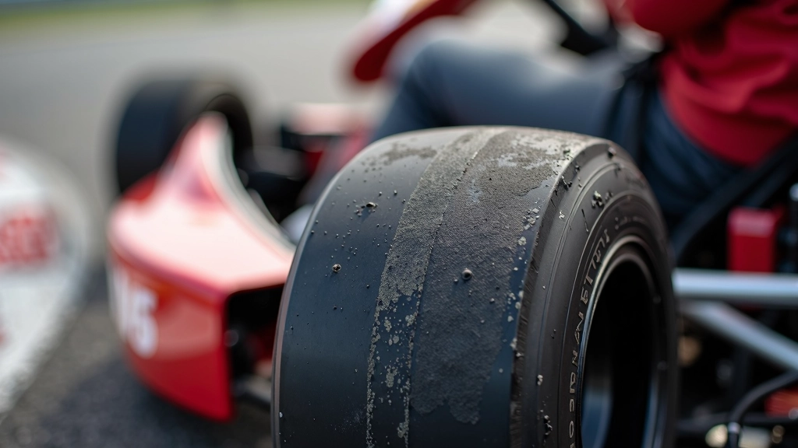
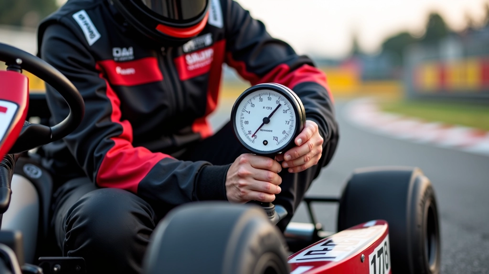
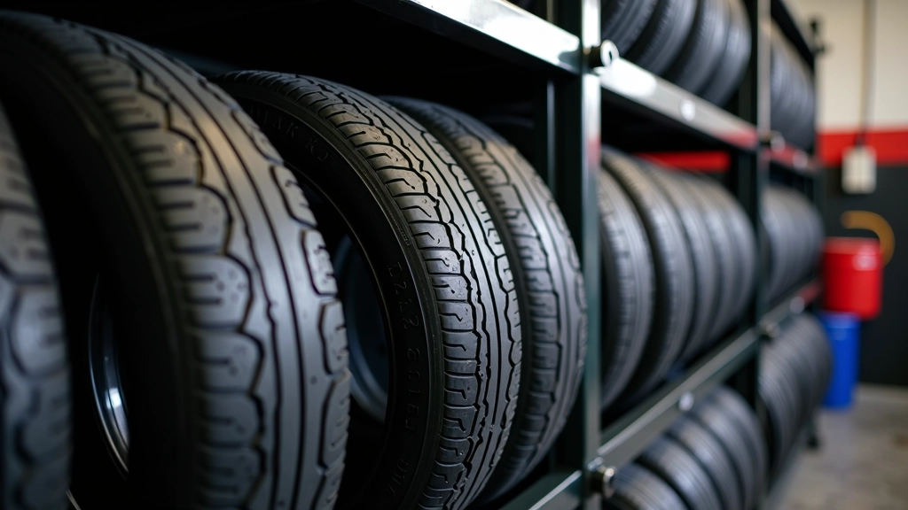

تحليل وتشخيص
برنامج تحليل الإطارات الشامل
منهج منظم لقراءة أنماط التآكل وتوزيع الحرارة على الإطار. يتضمن الخطة فحص دوري كل 5 جلسات تدريبية مع توثيق القياسات والملاحظات لتتبع التطور على مدار الموسم.
مشاريع عملية في إدارة الإطارات وتحسين التماسك على حلبات الكارتينج

منهج منظم لقراءة أنماط التآكل وتوزيع الحرارة على الإطار. يتضمن الخطة فحص دوري كل 5 جلسات تدريبية مع توثيق القياسات والملاحظات لتتبع التطور على مدار الموسم.

خطة عملية لضبط ضغوط الإطارات وفقاً لخصائص المسار والظروف المناخية. البرنامج يغطي 8 أسابيع من الاختبارات المنظمة مع تسجيل شامل لردود فعل السيارة وأداء السائق.

نظام منظم لتنظيف وفحص وتخزين الإطارات بشكل صحيح. يتضمن جداول الصيانة الشهرية وإرشادات التخزين في ظروف مثالية لإطالة عمر الإطار دون التأثير على الأداء.
دليل عملي لتعديل استراتيجية الإطارات عند تغير الطقس أو حالة السطح. يشرح الفروقات بين ظروف الجفاف والرطوبة والحرارة العالية، مع توصيات واضحة لكل حالة مناخية.
تواصل معنا اليوم لنناقش احتياجاتك وكيفية مساعدتك على تحقيق أفضل أداء على المسار
ابدأ معنا الآن